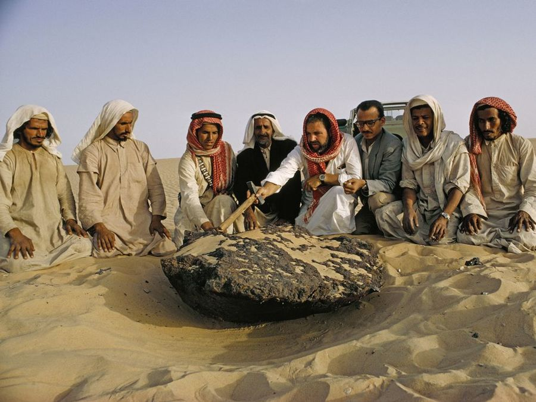

Folklore
The tales, legends and superstitions of a particular ethnic population.
From folk + lore, coined in 1846 by William Thoms1 to replace terms such as "popular antiquities". Thoms imitated German terms such as Volklehre (“people's customs”) and Volksüberlieferung ("popular tradition").
Our senses are so far removed from rocks and their reality that there’s a need to create bridges of understanding and empathy between our two cousin species.
Music is often used as a way to structure and strengthen the learning of language, but also to bind us into a group, two things that are desperately lacking in the understanding of the unfathomable. The elaboration of tools and the role of design into making this possible is then becoming a necessity.
The intention of Folklore is to transform rocks into being able to sing in order to link us together and feel what can it be like to listen to rocks and listen to what they possibly have to « say ». Using the property of piezoelectricity (deformation of rocks or crystals creating electricity), it is possible to listen to their core frequency and feel closer to those alien entities.
We recommend that you play this record with headphones on, eyes closed, in a quiet space.
